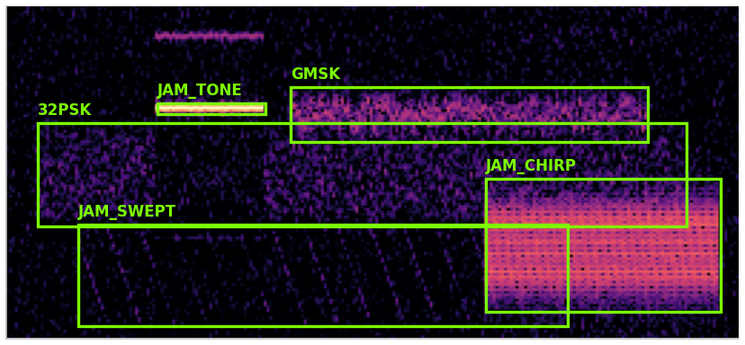
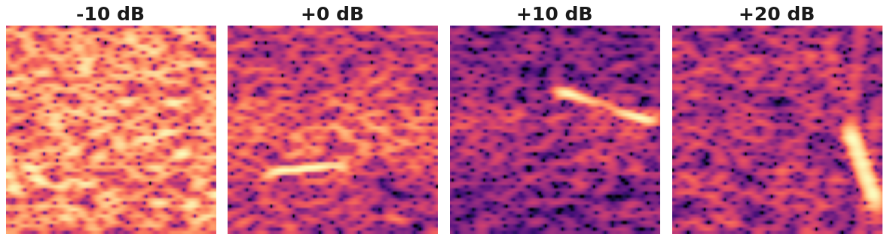

NEXA: find every radio signal, name it, read what it says
Too many transmitters share the air: how does one operator know what is out there, and what it says?
THE PROBLEM

One capture, five transmitters at once. Voice radios, data links, radar and jammers share the same band, often at the same moment. An operator can follow one channel at a time.
01
›
Find
box every transmitter
02
›
Name
60 kinds of signal
03
Read
voice and Morse to text
TODAY · 30 MINUTES
Datasets and Classes: what NEXA learned from
1.2 M labelled 160 µs windows · 60 classes · impaired like a real receiver
THE DATASET
60
classes in 11 families + noise floor
1.2 M
windows, 1,000 per class per SNR level
160 µs
per window: 512 IQ samples at 3.2 MS/s (±1.6 MHz)
16
SNR levels, −10 to +20 dB in 2 dB steps
Split
Sources: our own generators + public RadioML 2018 and HisarMod. Real recordings: testing only. Build f993d8ebc417: every family placed anywhere in the band.
SAME SIGNAL, FOUR STRENGTHS

One radar chirp from −10 dB (buried) to +20 dB (clear). Training covers it all, so the model knows when to say "uncertain".
60 CLASSES IN 12 FAMILIES
WHAT THE MODEL SEES IN 160 µs
One per family. Time across, frequency up, 20 dB: every family leaves its own shape.
Accuracy: families and their members
Signals placed anywhere in the band · conditions under every number
HEADLINE
per tracked emitter · all 60 classes · SNR ≥ 10 dB · vote over 16 windows (2.6 ms) · fixed test set, 120,000 windows
all 60 classes at 15 dB · vote over 8 windows · 32 fresh tracks per class
46 / 60
classes named exactly ≥ 50%
≥ 90%: 38 50–89%: 815 dB · 8-window vote
+8.7
points over the previous model
same fixed test set · fixed FSK / PSK / QAM data + the new physics branch
FAMILY RECOGNISED
right family · 15 dB · 8-window vote · 32 tracks per class · ≥ 80% shown · line = 80%
A LONGER LOOK, A SURER ANSWER

The tracker averages every window of one emitter: 8 windows (1.3 ms) already reach 79% at ≥ 10 dB.
FAMILY MEMBERS: EXACT CLASS
HOW SURE IT SAYS IT IS
T = 1.05honest %, calibrated
Nothing there · score below 0.09
0.09← below: noise floor1
Sizes alike · as a group
163264128256
QAM 16–256 · likeliest size as a hint
Processing pipeline: from IQ samples to a decision
Real model, one real window: a DRFM jammer copying an LFM radar, 18 dB
FROM 512 SAMPLES TO A MULTI-LABEL DECISION LIVE
Inside NEXA: system architecture
Top to bottom: see the whole spectrum, then name every emitter
SYSTEM ARCHITECTURE LIVE
OFFLINE · ONE WORKSTATION · NO DATA LEAVES THE MACHINE
1 · SEE THE SPECTRUM
2 · NAME IT
continues: voice and Morse channels are listened to and read → page 6
detector AP 0.70 · 80.6% per track ≥ 10 dB
Inside NEXA: listen and read, and three ways in
Voice and Morse become text on this machine, and here is how a signal reaches it in today's demos
LISTEN AND READ IT
▼ from the system: the resolver's answer for each track · a voice or Morse channel comes down here
1

Zoom-in
Zoomed to a few kHz and measured: carrier, sidebands, loudness. Rules name it AM, FM, SSB or CW; a clear result overrides the classifier.
voice demo 3 / 3
2

Demodulate
The right demodulator for the kind (AM, FM, SSB, CW) turns the IQ into 16 kHz audio.
3

Voice → text
Whisper speech recognition, run locally. No training on our side.
speech → texton this machine
CQ CQ DE NEXA K
Morse → text
Finds the beep, times each key press, measures the dot length, turns dots and dashes into letters.
18 WPM test message
4
"summary": one or two lines
"category": calling / message …
"call_signs": only if in the text
"evidence": exact quotes
AI reasoning, kept honest
A local model (Ollama) reads the text plus measured facts. Anything it names that is not in the decoded text is removed; the text is shown beside it.
THREE WAYS IN LIVE
Recorded signal
demo 1 · in SDRconnect
Our walkie-talkie
demo 2 · antenna + RSPduo
KiwiSDR online
demo 3 · real shortwave
NEXA
same analysis
① find the signal② name the type③ demodulate④ decode to text⑤ AI reading → dashboard
Results arrive about 30 s to 1 min after the audio.
Live demos 1 and 2: a recorded signal, then our walkie-talkie
Same setup for both: SDRconnect on laptop A sends raw radio (IQ) to NEXA on laptop B over the hotspot
THE SETUP · TWO LAPTOPS, ONE HOTSPOT LIVE
DEMO 1 · file
DEMO 2 · antenna
Laptop A · SDRconnect
WebSocket interface on · waterfall on screen, sound on the speaker
raw radio data (IQ) over the phone hotspot
local Wi-Fi only, mobile data off · SDRconnect port 5454
Laptop B · NEXA
connects to laptop A's IPv4 address (ipconfig), port 5454
boxtypewordsAI reading
DEMO 1 · A RECORDED SIGNAL
RECORDED SIGNAL · NOT A LIVE INTERCEPT
DEMO 2 · OUR WALKIE-TALKIE
we speak
walkie-talkie
antenna + RSPduo
laptop A
laptop B · NEXA
The voice
Sent as narrow FM: the wave speeds up and slows down with the voice
NBFM = narrowband FM · the voice makes the radio wave's frequency wobble slightly, inside a channel about 12.5 kHz wide
spot the channel›name it NBFM›back to speech›transcript + AI reading
Live demo 3: real shortwave from KiwiSDR
Both laptops reach an online receiver on their own; NEXA names and decodes it, and we find where it came from
ONE RECEIVER, TWO LAPTOPS LIVE
Both laptops connect to the receiver on their own, over the internet.
KiwiSDR receiver
shortwave 0–30 MHz · one ~12 kHz channel at a time · listen only
Laptop A · website
listen · waterfall · TDoA
Laptop B · NEXA
stream · name · decode
location, typed in
WHAT NEXA DOES WITH IT
WHERE IS IT COMING FROM? · TDoA
Three or more GPS-timed receivers hear the same signal. The tiny differences in when it arrives point to where the transmitter is. A teammate runs it on the KiwiSDR website, then types the location into NEXA's Locate on KiwiSDR panel.
needs internet on both laptops
all receivers must hear it clearly
a likely area, not an exact point
pick a region with many receivers
press Stop afterwards: frees the receiver's slot
People stay in control
NEXA suggests, people decide: every capture, decision and correction stays on this machine
HUMAN IN THE LOOP
Yes → goes live
roll back any time
No → stays out
current model kept
▲ back to the Classifier
a new model applies from the next signal
a new model applies from the next signal
Every capture, decision and correction stays in a local database with a tamper-evident audit trail.
Today's three demos are already in it: Signal Pipeline, Comms Intel and the audit trail.
Local database
analyses, corrections and model versions, on this laptop
Audit trail
append-only and hash-chained: any edit is detected
Raw IQ store
recordings kept with SHA-256 fingerprints
OFFLINE · ONE WORKSTATION · NO DATA LEAVES
CONCLUSION
Find it.
Name it.
Read it.
Name it.
Read it.
A recorded signal
found, named and read, step by step
Our own walkie-talkie
our voice, received and turned into text
Real shortwave
from a receiver far away, and where it came from
offline · one workstation60 classes, incl. radar and jammingpeople stay in control